Chassis profile
The 2020 iPhone 12 Pro is a 6.1-inch Lightning model. Flat-sided Pro model with camera and LiDAR hardware close to the rear assembly.
Model-Specific Tutorial
This iPhone 12 Pro screen guide is written as a standalone bench page. It explains the 2020 6.1-inch chassis, the parts most likely to be damaged, and the checks to make before the phone is sealed again.
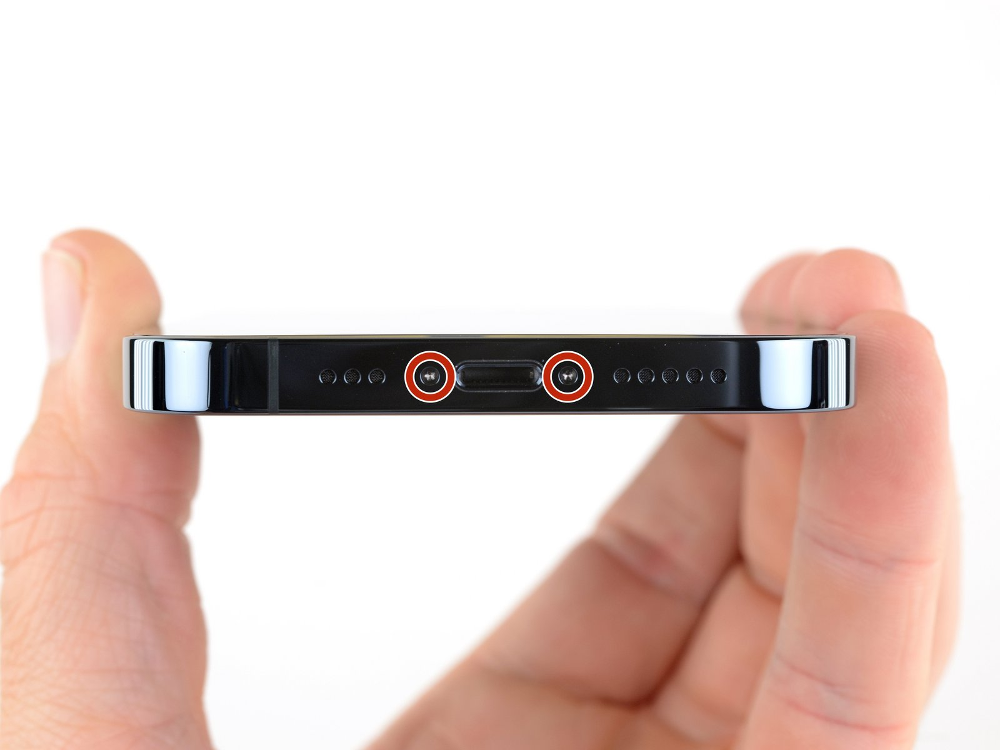
Model Notes
The 2020 iPhone 12 Pro is a 6.1-inch Lightning model. Flat-sided Pro model with camera and LiDAR hardware close to the rear assembly.
This page focuses on how to separate the display adhesive, protect display and sensor flex cables, move any required small parts, and test the panel before sealing. The 33 photo steps are kept in bench order so the screw table and the visible part position stay aligned.
Keep P2 pentalobe driver, Y000 driver, suction handle ready first, then add opening picks, heat source, spudger as the phone opens.
After the repair, inspect touch response, brightness, True Tone where available, Face ID or sensor behavior, earpiece sound, and clean frame seating. If anything fails, reopen before adhesive pressure makes the correction harder.
Start Here
Use this iPhone 12 Pro guide for cracked glass, black display, green lines, ghost touch, or failed touch response. The photos are arranged as a practical bench sequence so you can stop after each action and compare the part position.
Flat-sided Pro model with camera and LiDAR hardware close to the rear assembly. For this screen repair, watch display flex cables, top sensor hardware, waterproof adhesive, and mixed-length bracket screws.
Check touch response, brightness, True Tone where available, Face ID or sensor behavior, earpiece sound, and clean frame seating. This final check matters more on iPhone 12 Pro because flat-sided Pro model with camera and LiDAR hardware close to the rear assembly.
US Repair Search Notes
This guide is written for US repair searches around iPhone 12 Pro screen replacement cost, cracked iPhone glass repair, black screen repair, green line display repair, and touch failure troubleshooting. It keeps the model name, repair type, symptom, and part checks together on one page.
Before ordering parts, match the exact iPhone 12 Pro generation, 6.1-inch display size, Lightning connector style, and the display assembly, touch response, OLED panel behavior, Face ID sensor area, and waterproof adhesive mentioned in this guide.
Pay extra attention to step 1 (Remove the pentalobe screws), step 16 (Separate the left adhesive), and step 20 (Disconnect the battery). These photos usually decide whether the repair stays clean or needs to be reopened.
A successful iPhone 12 Pro screen repair should pass the closing checks, sit flush around the frame, and show no new warnings, loose brackets, lifted adhesive, or cable pressure marks.
Step By Step
Follow these 33 photos in order. Each iPhone 12 Pro step includes a model note, the action from the photo, and a risk check for the screen repair.
iPhone 12 Pro note: iPhone 12 Pro screw note: record this location before lifting the part. 6.1-inch models can reuse similar screw colors with different lengths.
Caution: Before you begin, discharge your iPhone battery below 25%. A charged lithium-ion battery can catch fire and/or explode if accidentally punctured. Power off your iPhone before beginning disassembly. Remove the two 6.75 mm long pentalobe P2 screws at the bottom edge of the iPhone. Opening the iPhone's display will compromise its waterproof seals. Have replacement seals ready before you proceed past this step, or take care to avoid liquid exposure if you reassemble your iPhone without replacing the seals.
Screw rule: return each screw to the exact screen step location; a long screw in the wrong hole can damage the board.

iPhone 12 Pro note: iPhone 12 Pro display note: support the panel at a shallow angle so the 2020 flex routing is not pulled.
If inserted too far, an opening pick can damage your device. Follow this step to mark your pick and prevent damage. Measure 3 mm from the tip and mark the opening pick with a permanent marker. You can also mark the other corners of the pick with different measurements. Alternatively, tape a coin to a pick 3 mm from the tip.
Part rule: keep the removed part, bracket, and screws together until the matching reassembly step.

iPhone 12 Pro note: iPhone 12 Pro display note: support the panel at a shallow angle so the 2020 flex routing is not pulled.
If your iPhone has a cracked screen, keep further breakage contained and prevent bodily harm during your repair by taping over the glass. Lay overlapping strips of clear packing tape over the iPhone's screen until the whole face is covered. Wear safety glasses to protect your eyes from any glass shaken free during the repair. If you can't get the suction cup to stick in the next few steps, fold a strong piece of tape (such as duct tape) into a handle and lift the screen with that instead. If all else fails,...
Part rule: keep the removed part, bracket, and screws together until the matching reassembly step.
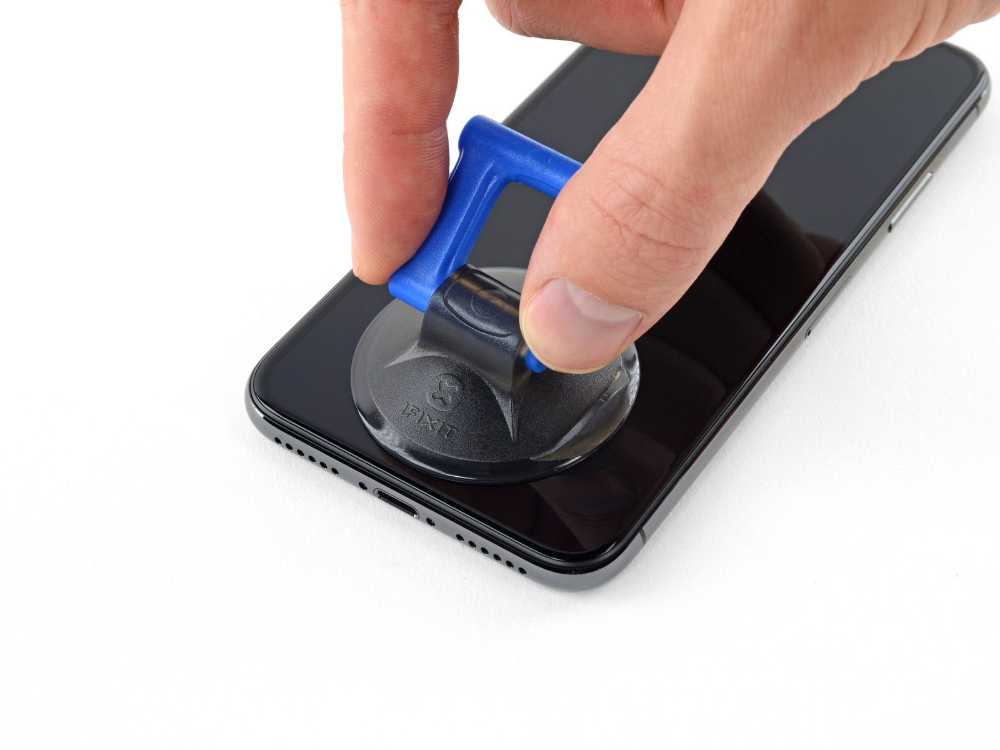
iPhone 12 Pro note: iPhone 12 Pro display note: support the panel at a shallow angle so the 2020 flex routing is not pulled.
Use a suction handle or opening clamp to gently lift the edge of the display. Keep the suction cups aligned near the bottom edge, apply steady pressure, and use tape if the glass is too slippery.
Part rule: keep the removed part, bracket, and screws together until the matching reassembly step.
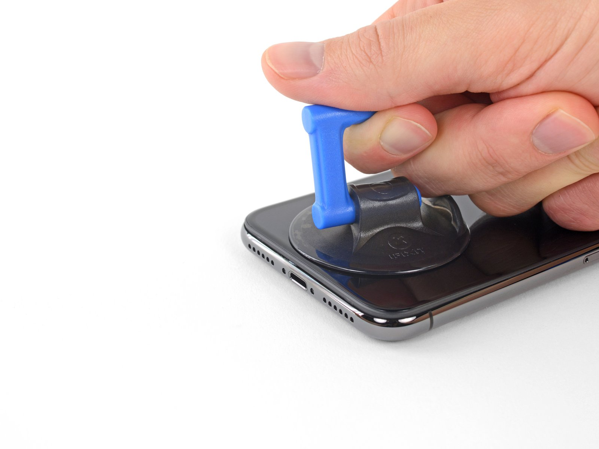
iPhone 12 Pro note: iPhone 12 Pro display note: support the panel at a shallow angle so the 2020 flex routing is not pulled.
Apply steady lifting pressure with the suction handle until the adhesive begins to separate. Keep the cups aligned and adjust the tool if it slips.
Adhesive rule: reheat and work shallow. On iPhone 12 Pro, forcing a cold edge can bend clips or mark the frame.
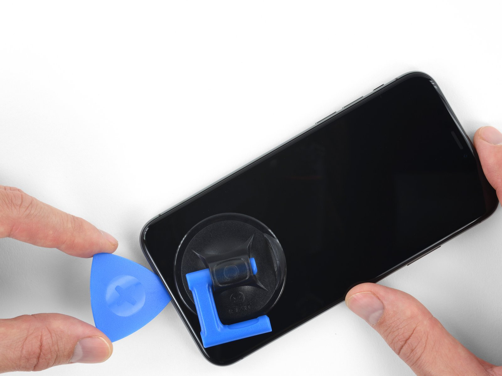
iPhone 12 Pro note: iPhone 12 Pro display note: support the panel at a shallow angle so the 2020 flex routing is not pulled.
Apply heat to the lower edge for about one minute, then insert an opening pick under the screen bezel once a small gap appears. Work slowly and add more heat if the adhesive remains tight.
Adhesive rule: reheat and work shallow. On iPhone 12 Pro, forcing a cold edge can bend clips or mark the frame.
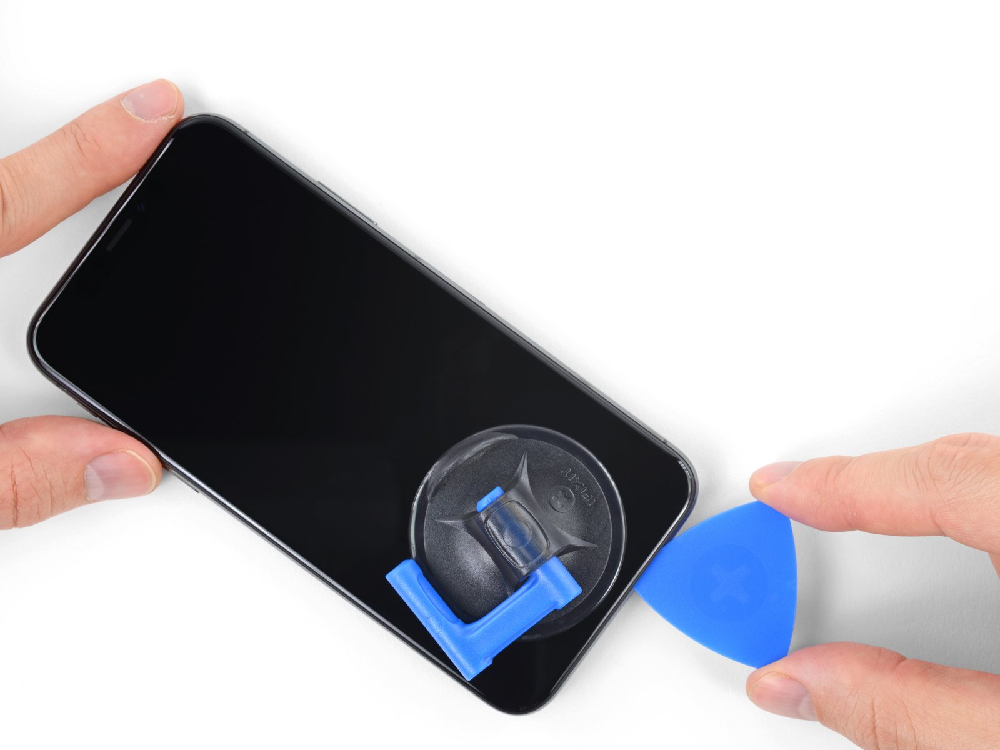
iPhone 12 Pro note: iPhone 12 Pro display note: support the panel at a shallow angle so the 2020 flex routing is not pulled.
Use a hair dryer or a heat gun to heat the bottom edge of the iPhone until the screen is slightly too hot to touch. Never leave your hair dryer in one spot for an extended period of time.
Adhesive rule: reheat and work shallow. On iPhone 12 Pro, forcing a cold edge can bend clips or mark the frame.
iPhone 12 Pro note: iPhone 12 Pro display note: support the panel at a shallow angle so the 2020 flex routing is not pulled.
If you're using a single suction handle, apply it to the bottom edge of the phone, while avoiding the very edge of the glass.
Part rule: keep the removed part, bracket, and screws together until the matching reassembly step.
iPhone 12 Pro note: iPhone 12 Pro display note: support the panel at a shallow angle so the 2020 flex routing is not pulled.
Pull up on the suction cup with firm, constant pressure to create a slight gap between the screen and the frame. Insert an opening pick at a steep angle into the gap. Make sure to insert the opening pick under the thick plastic bezel to avoid damaging your screen. You should see a visual gap, and the pick shouldn't catch on anything. If you can't see the gap, you'll need to pull the screen up more. The watertight adhesive holding the screen in place is very strong;...
Part rule: keep the removed part, bracket, and screws together until the matching reassembly step.

iPhone 12 Pro note: iPhone 12 Pro display note: support the panel at a shallow angle so the 2020 flex routing is not pulled.
Don't insert your opening pick deeper than 3 mm along the bottom edge. Slide your pick back and forth along the bottom edge to separate the adhesive. Leave your pick inserted in the bottom right corner to prevent the adhesive from re-sealing.
Adhesive rule: reheat and work shallow. On iPhone 12 Pro, forcing a cold edge can bend clips or mark the frame.
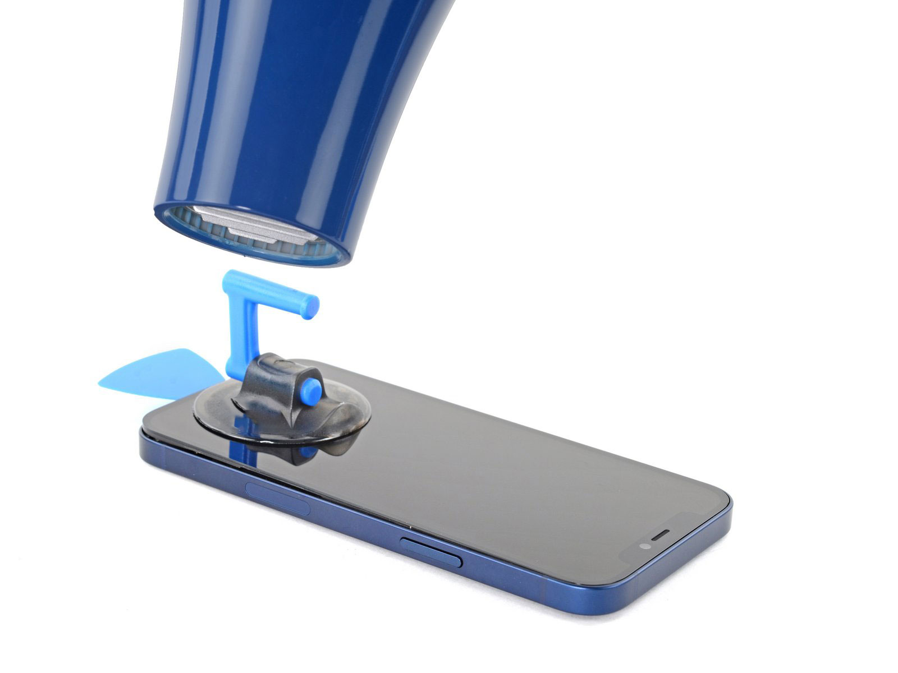
iPhone 12 Pro note: iPhone 12 Pro display note: support the panel at a shallow angle so the 2020 flex routing is not pulled.
Use a hair dryer to heat the right edge of the iPhone (the edge with the power button) until the screen is slightly too hot to touch.
Adhesive rule: reheat and work shallow. On iPhone 12 Pro, forcing a cold edge can bend clips or mark the frame.
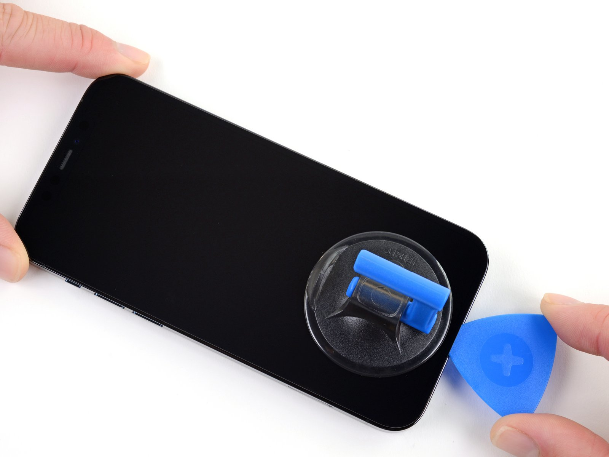
iPhone 12 Pro note: iPhone 12 Pro display note: support the panel at a shallow angle so the 2020 flex routing is not pulled.
Slide the opening pick around the bottom right corner of the iPhone to separate its adhesive. Continue sliding up the right edge of the iPhone until you reach the top right corner. Don't insert your pick more than 3 mm, as you may damage internal components. Leave the pick in the top right corner before continuing.
Adhesive rule: reheat and work shallow. On iPhone 12 Pro, forcing a cold edge can bend clips or mark the frame.
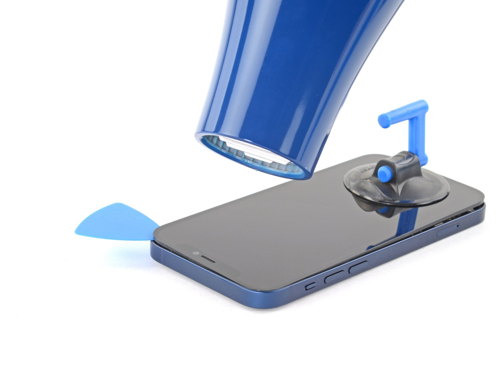
iPhone 12 Pro note: iPhone 12 Pro display note: support the panel at a shallow angle so the 2020 flex routing is not pulled.
Use a hair dryer to heat the top edge of the iPhone until the screen is slightly too hot to touch.
Adhesive rule: reheat and work shallow. On iPhone 12 Pro, forcing a cold edge can bend clips or mark the frame.
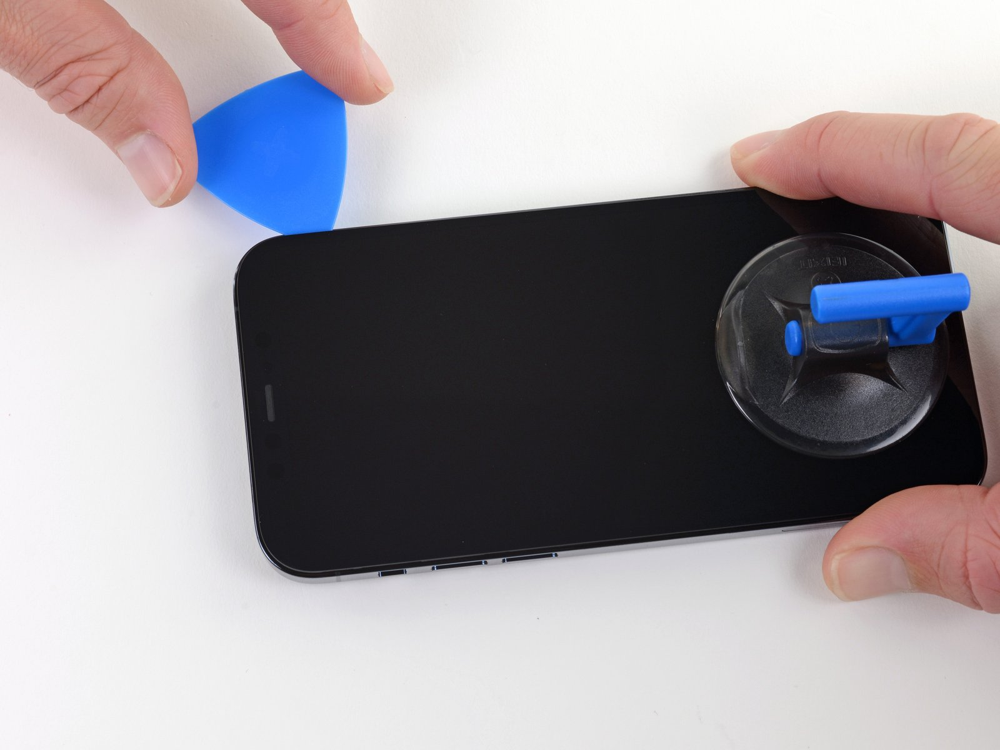
iPhone 12 Pro note: iPhone 12 Pro display note: support the panel at a shallow angle so the 2020 flex routing is not pulled.
Slide the opening pick around the top right corner of the iPhone to separate the top adhesive. Leave the pick in the top left corner before continuing. Don't insert your pick more than 3 mm, as you may damage the top sensors.
Adhesive rule: reheat and work shallow. On iPhone 12 Pro, forcing a cold edge can bend clips or mark the frame.
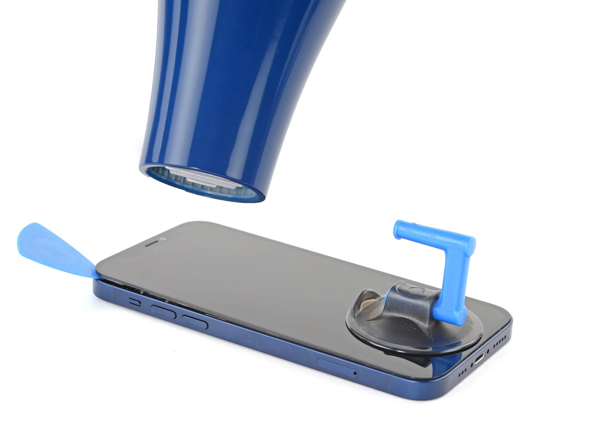
iPhone 12 Pro note: iPhone 12 Pro display note: support the panel at a shallow angle so the 2020 flex routing is not pulled.
Use a hair dryer to heat the left edge of the iPhone until the screen is slightly too hot to touch.
Adhesive rule: reheat and work shallow. On iPhone 12 Pro, forcing a cold edge can bend clips or mark the frame.
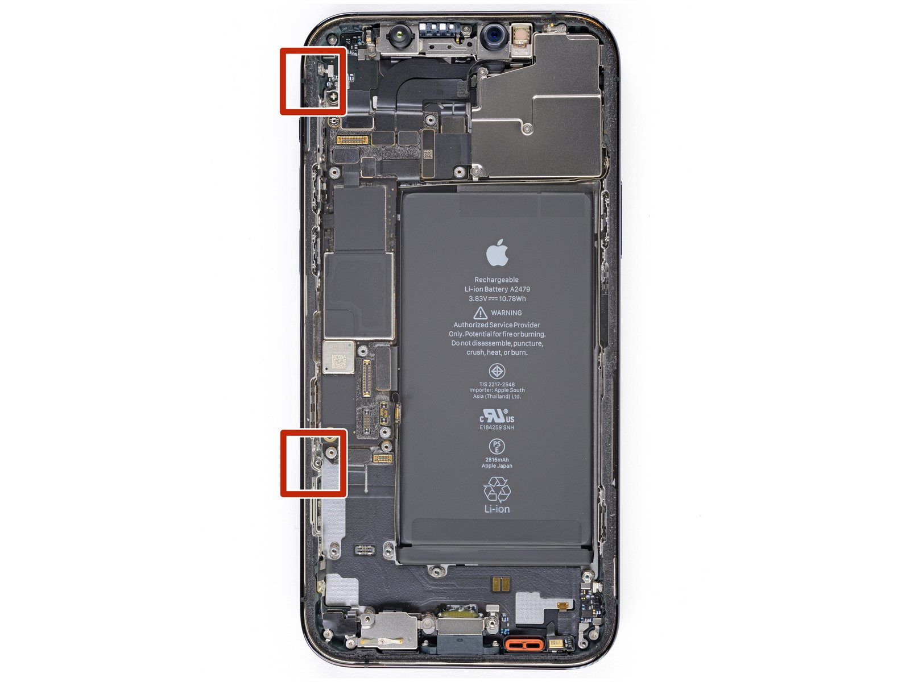
iPhone 12 Pro note: iPhone 12 Pro display note: support the panel at a shallow angle so the 2020 flex routing is not pulled.
Don't insert your pick deeper than 2 mm along the left edge to avoid the two cables connecting the screen to the phone. Rotate your pick around the top left corner of the screen. Slide your pick to the bottom left corner of the screen to separate the adhesive. If you're having trouble separating the adhesive, reheat the left edge.
Adhesive rule: reheat and work shallow. On iPhone 12 Pro, forcing a cold edge can bend clips or mark the frame.
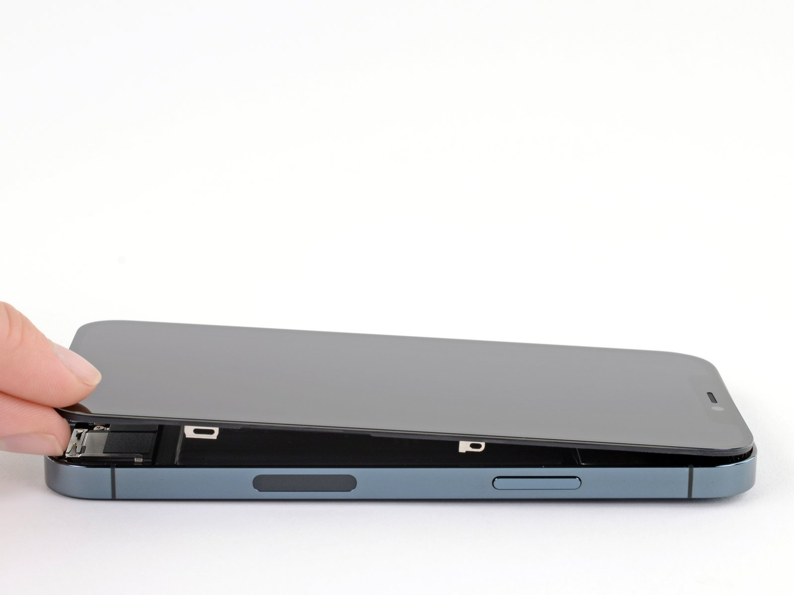
iPhone 12 Pro note: iPhone 12 Pro display note: support the panel at a shallow angle so the 2020 flex routing is not pulled.
Rotate your iPhone so the right edge faces you. Open the iPhone by swinging the display up from the right side, like the front cover of a book. Don't try to fully separate the display yet, as several fragile ribbon cables still connect it to the iPhone's logic board. Lean the display against something to keep it propped up while you're working on the phone. During reassembly, lay the display in position, align the clips along the top edge,...
Part rule: keep the removed part, bracket, and screws together until the matching reassembly step.
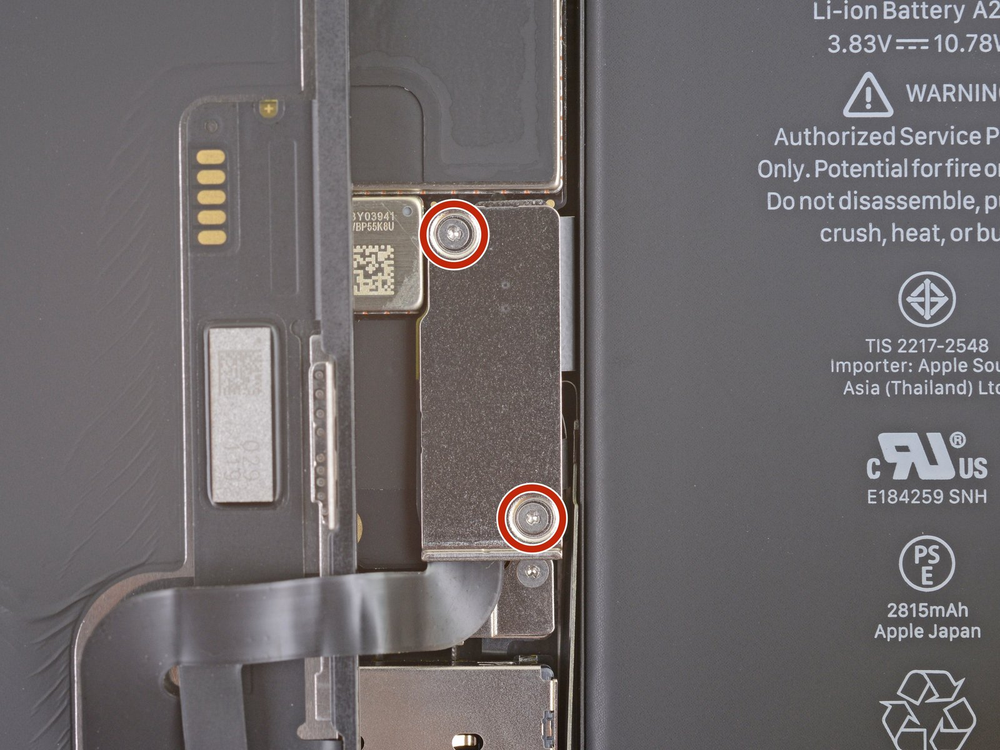
iPhone 12 Pro note: iPhone 12 Pro screw note: record this location before lifting the part. 6.1-inch models can reuse similar screw colors with different lengths.
Remove two 1.1 mm long Y000 screws securing the battery and display connector cover. Throughout this repair, keep track of each screw and make sure it goes back exactly where it came from to avoid damaging your iPhone. During reassembly, this is a good point to power on your iPhone and test all functions before you seal the display in place. Be sure to power your iPhone back down completely before you continue working.
Connector rule: align over the socket first, then press from one side and the other. Do not press the middle if it feels misaligned.
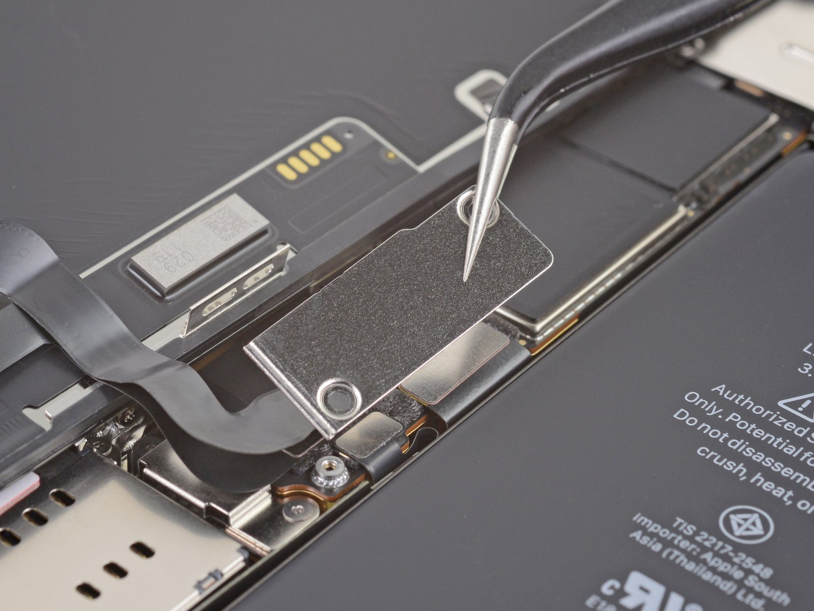
iPhone 12 Pro note: iPhone 12 Pro screw note: record this location before lifting the part. 6.1-inch models can reuse similar screw colors with different lengths.
Remove the cover.
Connector rule: align over the socket first, then press from one side and the other. Do not press the middle if it feels misaligned.
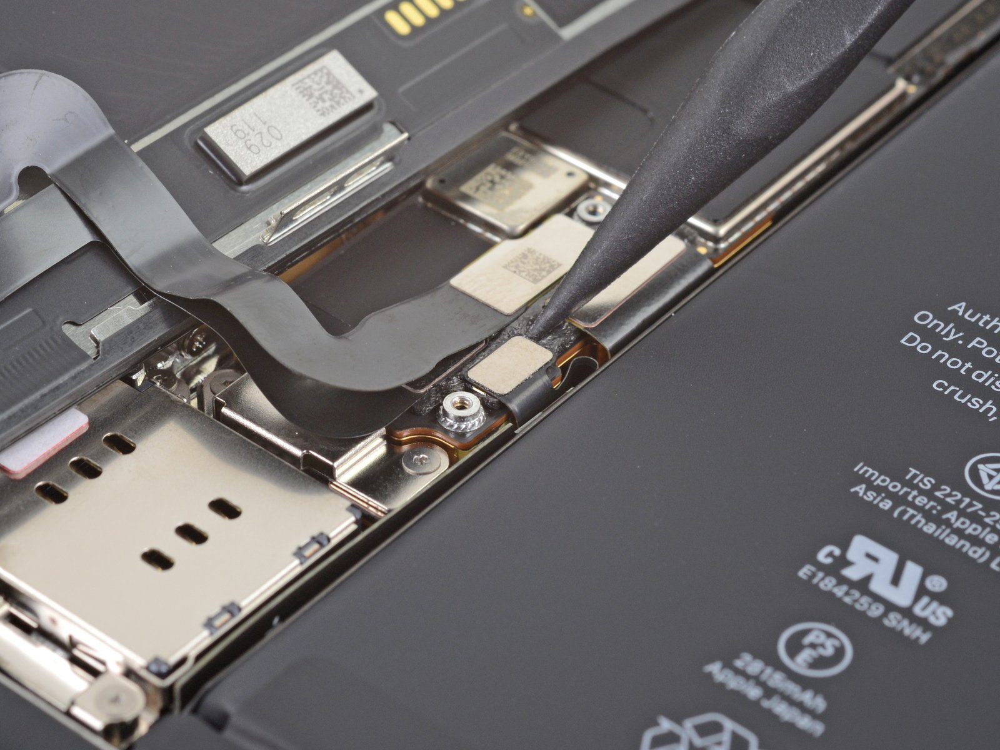
iPhone 12 Pro note: iPhone 12 Pro battery note: use plastic tools near the cell and pause if adhesive resistance suddenly increases.
Use a spudger or a clean fingernail to pry the battery connector up from its socket on the logic board. Try not to damage the black silicone seal surrounding this and other board connections. These seals provide extra protection against water and dust intrusion. Bend the connector slightly away from the logic board to prevent it from accidentally making contact with the socket and providing power to the phone during your repair.
Connector rule: align over the socket first, then press from one side and the other. Do not press the middle if it feels misaligned.
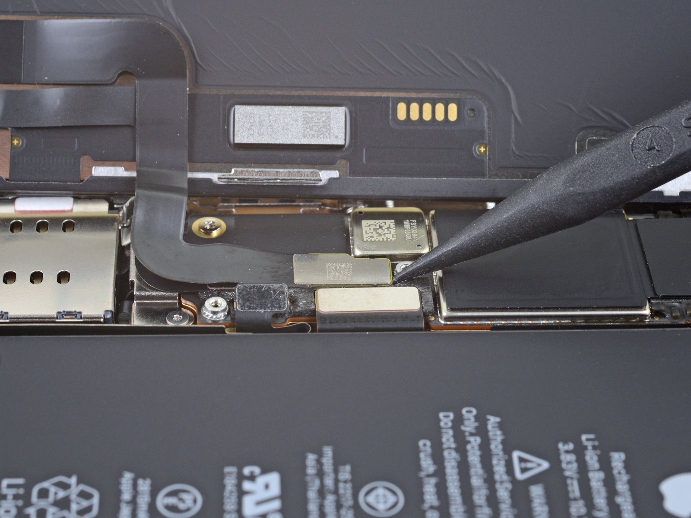
iPhone 12 Pro note: iPhone 12 Pro display note: support the panel at a shallow angle so the 2020 flex routing is not pulled.
Use a spudger or a fingernail to disconnect the display cable connector. To re-attach press connectors like this one, carefully align and press down on one side until it clicks into place, then repeat on the other side. Do not press down on the middle. If the connector is misaligned, the pins can bend, causing permanent damage.
Connector rule: align over the socket first, then press from one side and the other. Do not press the middle if it feels misaligned.
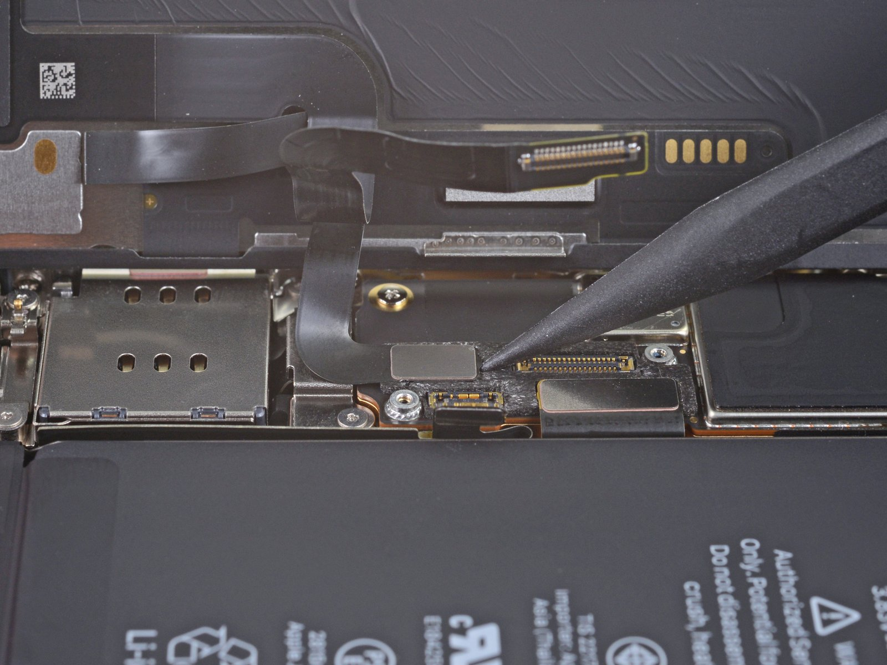
iPhone 12 Pro note: iPhone 12 Pro display note: support the panel at a shallow angle so the 2020 flex routing is not pulled.
Use a spudger or a fingernail to disconnect the digitizer cable connector. If any part of your screen doesn't respond to touch after your repair, disconnect the battery and then re-seat this connector, making sure it clicks fully into place and that there's no dust or other obstruction in the socket.
Connector rule: align over the socket first, then press from one side and the other. Do not press the middle if it feels misaligned.
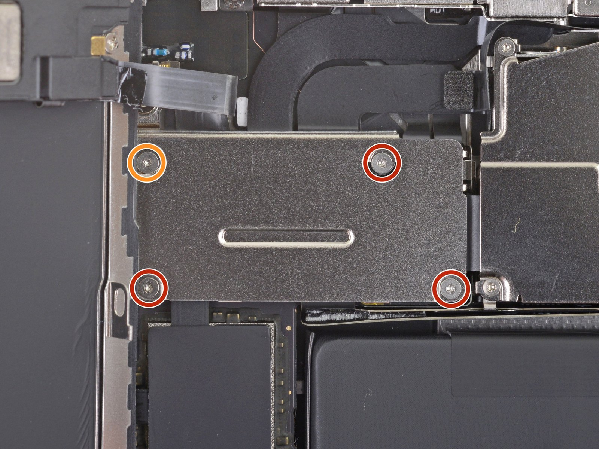
iPhone 12 Pro note: iPhone 12 Pro screw note: record this location before lifting the part. 6.1-inch models can reuse similar screw colors with different lengths.
Use a Y000 driver to remove four screws securing the front sensor connector cover. Three 1.1 mm-long screws One 1.4 mm-long screw
Connector rule: align over the socket first, then press from one side and the other. Do not press the middle if it feels misaligned.
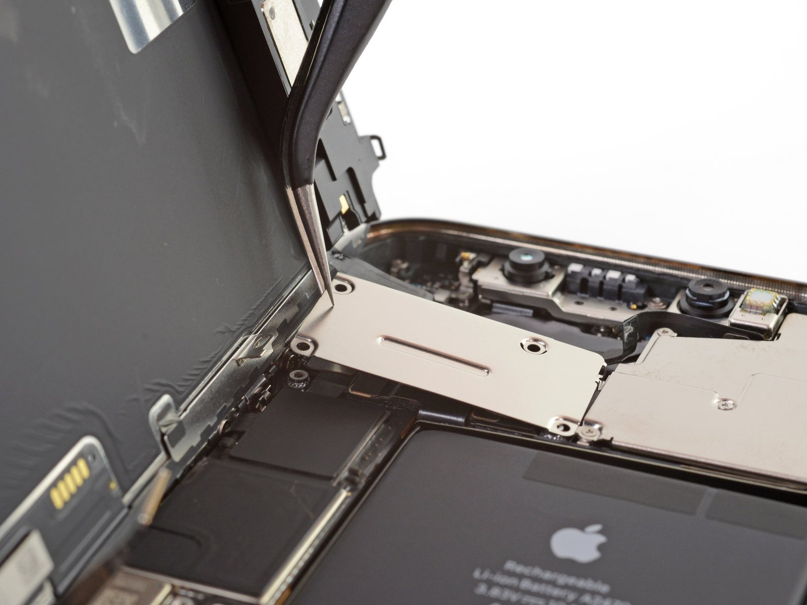
iPhone 12 Pro note: iPhone 12 Pro screw note: record this location before lifting the part. 6.1-inch models can reuse similar screw colors with different lengths.
Swing the cover up from the left until the small clip on the right unhooks. Remove the cover. During reassembly, insert the clip on the right edge into its slot first, then hinge the rest of the cover into place.
Connector rule: align over the socket first, then press from one side and the other. Do not press the middle if it feels misaligned.
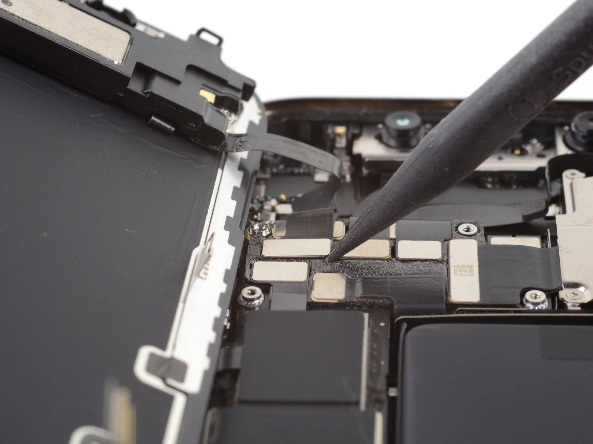
iPhone 12 Pro note: iPhone 12 Pro display note: support the panel at a shallow angle so the 2020 flex routing is not pulled.
Use a spudger or a fingernail to disconnect the front sensor assembly cable connector.
Connector rule: align over the socket first, then press from one side and the other. Do not press the middle if it feels misaligned.
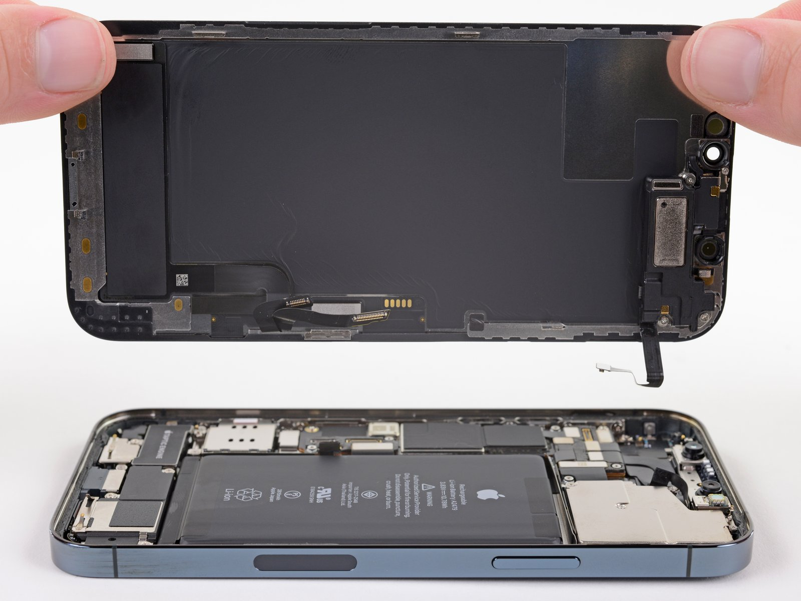
iPhone 12 Pro note: iPhone 12 Pro display note: support the panel at a shallow angle so the 2020 flex routing is not pulled.
Remove the display assembly. During reassembly, pause here if you wish to replace the waterproof adhesive around the edges of the display.
Part rule: keep the removed part, bracket, and screws together until the matching reassembly step.
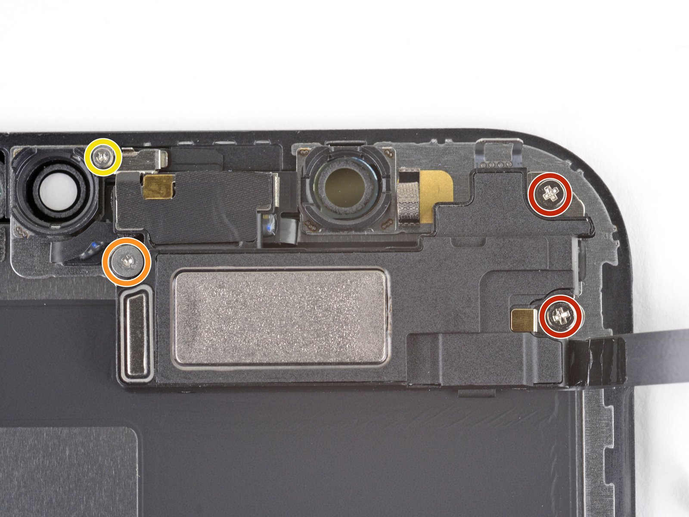
iPhone 12 Pro note: iPhone 12 Pro screw note: record this location before lifting the part. 6.1-inch models can reuse similar screw colors with different lengths.
Remove the four screws securing the speaker/sensor assembly to the back of the display. Two 1.4 mm long Phillips screws One 1.7 mm long shouldered Y000 screw One 1.2 mm long Y000 screw
Screw rule: return each screw to the exact screen step location; a long screw in the wrong hole can damage the board.
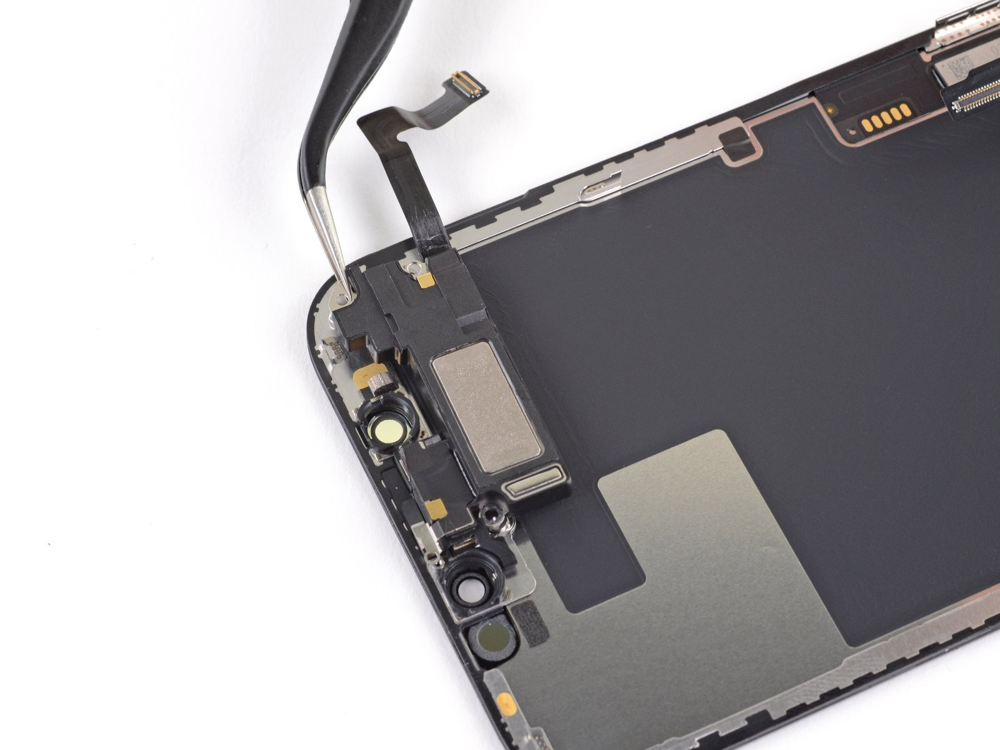
iPhone 12 Pro note: iPhone 12 Pro display note: support the panel at a shallow angle so the 2020 flex routing is not pulled.
The earpiece speaker is lightly adhered in place. Use the point of a spudger to gently pry up the top edge of the speaker. Flip the speaker assembly over down and away from the top edge of the display. The speaker remains attached via a very thin ribbon cable. Be careful not to strain or damage the cable.
Part rule: keep the removed part, bracket, and screws together until the matching reassembly step.
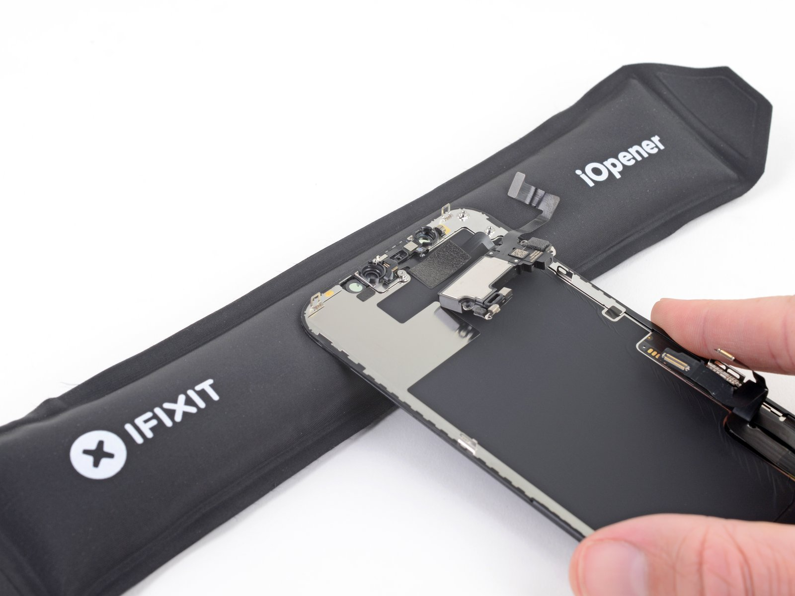
iPhone 12 Pro note: iPhone 12 Pro display note: support the panel at a shallow angle so the 2020 flex routing is not pulled.
Use a hair dryer or heat gun or prepare a heat pack and apply it to the top front of the display for 1-2 minutes, in order to soften the adhesive securing the sensors.
Adhesive rule: reheat and work shallow. On iPhone 12 Pro, forcing a cold edge can bend clips or mark the frame.
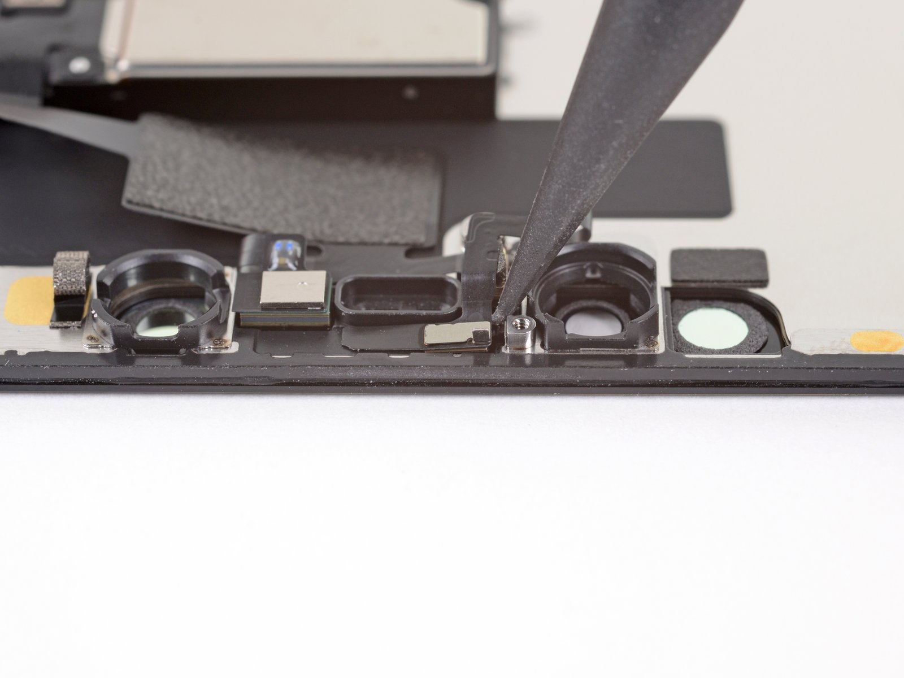
iPhone 12 Pro note: iPhone 12 Pro display note: support the panel at a shallow angle so the 2020 flex routing is not pulled.
Use the point of a spudger to lift and separate the ambient light sensor from its notch in the front panel. Take care not to damage the light sensor ribbon cables while prying. Continue sliding the spudger underneath the ambient light sensor and its cable to separate the adhesive securing the cable.
Part rule: keep the removed part, bracket, and screws together until the matching reassembly step.
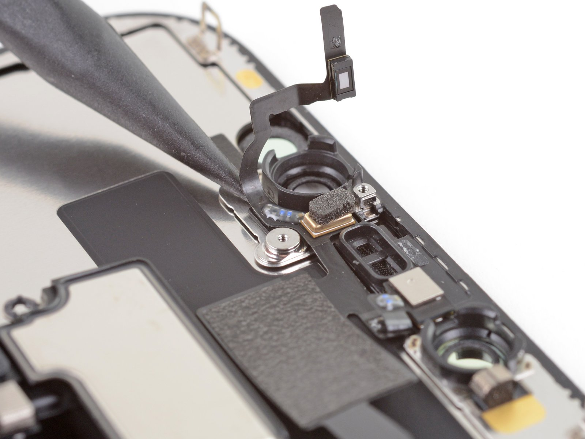
iPhone 12 Pro note: iPhone 12 Pro display note: support the panel at a shallow angle so the 2020 flex routing is not pulled.
Use the point of a spudger to lift and separate the microphone from its notch in the front panel.
Part rule: keep the removed part, bracket, and screws together until the matching reassembly step.
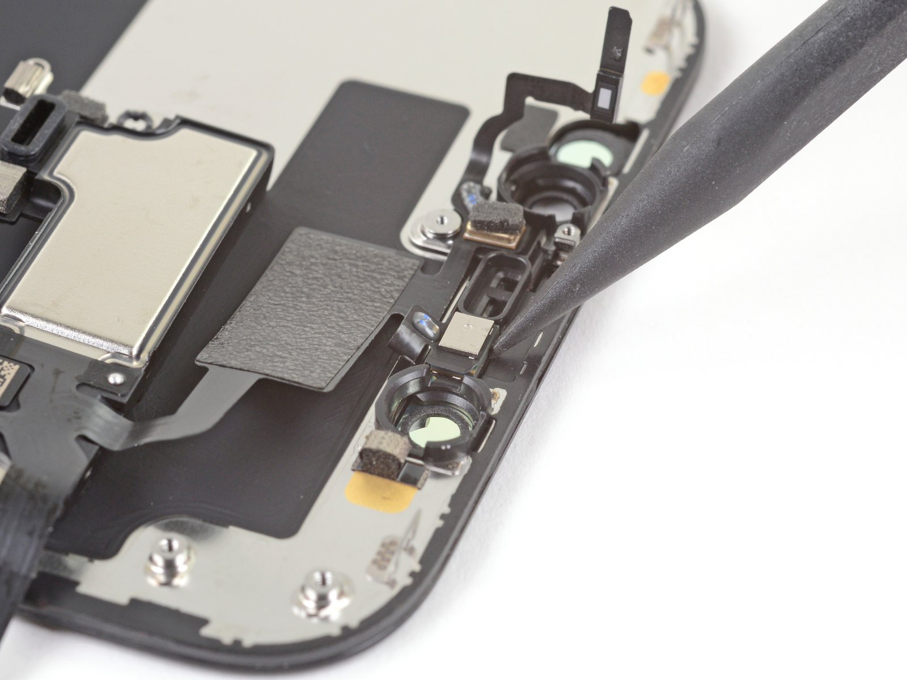
iPhone 12 Pro note: iPhone 12 Pro display note: support the panel at a shallow angle so the 2020 flex routing is not pulled.
Use the point of a spudger to lift the proximity sensor and flood illuminator module out of its notch in the front panel.
Part rule: keep the removed part, bracket, and screws together until the matching reassembly step.
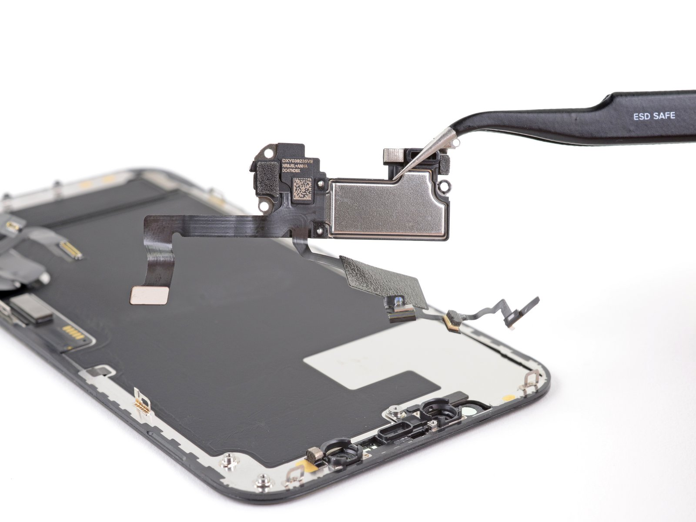
iPhone 12 Pro note: iPhone 12 Pro display note: support the panel at a shallow angle so the 2020 flex routing is not pulled.
Remove the earpiece speaker and front sensor assembly. During reassembly, check the position of the black plastic module containing these components: Proximity sensor Flood illuminator The module must be positioned so that these components are not obstructed by any adhesive.
Part rule: keep the removed part, bracket, and screws together until the matching reassembly step.
Screw Map
Use this table as the iPhone 12 Pro screw map for the screen job. If a row mentions a bracket, keep that bracket and its screws together until reassembly.
| Repair step | Photo marker | Screw note and length |
|---|---|---|
| Remove the pentalobe screws | black | Remove the two 6.75 mm long pentalobe P2 screws at the bottom edge of the iPhone. |
| Unscrew the battery and display connector cover | red | Remove two 1.1 mm long Y000 screws securing the battery and display connector cover. |
| Unscrew the front sensor connector cover | red | Three 1.1 mm-long screws |
| Unscrew the front sensor connector cover | orange | One 1.4 mm-long screw |
| Unscrew the speaker/sensor assembly | red | Two 1.4 mm long Phillips screws |
| Unscrew the speaker/sensor assembly | orange | One 1.7 mm long shouldered Y000 screw |
| Unscrew the speaker/sensor assembly | yellow | One 1.2 mm long Y000 screw |
FAQ
No. Similar generations often share repair ideas, but iPhone 12 Pro has its own 6.1-inch housing, Lightning port layout, screw positions, and cable routing.
For this screen repair, test touch response, brightness, True Tone where available, Face ID or sensor behavior, earpiece sound, and clean frame seating. Do this before final adhesive pressure.
The table highlights steps where length or bracket position matters. Mixed screws are one of the easiest ways to turn a simple iPhone 12 Pro repair into board damage.
Stop if heat becomes excessive, a connector will not align, the battery bends, or glass fragments move toward cameras, cables, or the board.
References